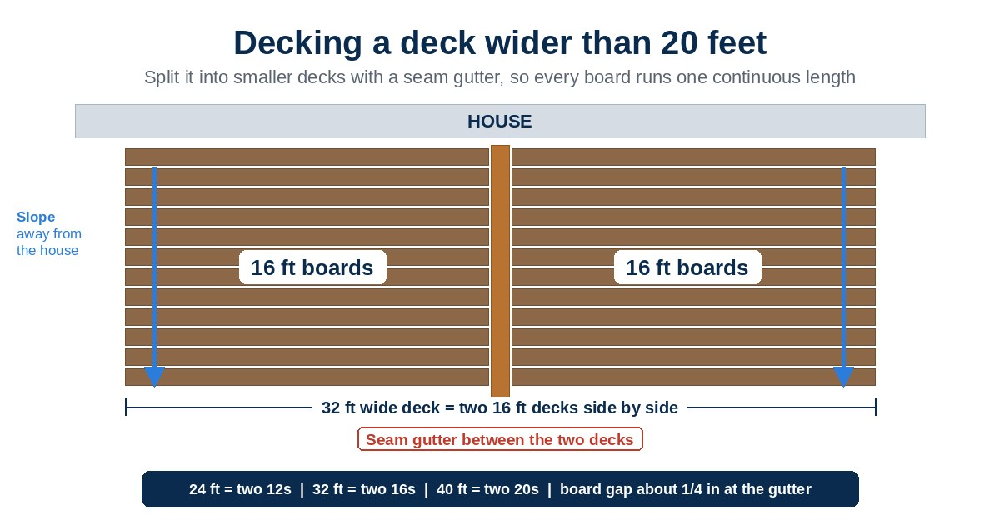

Plenty of decks run wider than a single deck board. On a conventional gapped deck, builders often butt two boards end to end over a joist and move on. On an AmeriDex deck, the boards lock onto the Dexerdry seal so rain stays on top and runs off the surface. That seal only works as one continuous run, so a long deck needs a plan before the first joist goes up.
Plan any AmeriDex deck wider than 20 feet as smaller decks side by side. Split them with a seam gutter or a center board with a gutter on each side, so every board and every piece of the Dexerdry seal runs one continuous length.
Why you can't just butt two boards together
AmeriDex boards come in 12, 16 and 20 foot lengths, and the Dexerdry seal is cut to the length of each board. Two rules follow from that:
- No mid-run seams in the decking. Butt joints happen only at a center board, never in the middle of a run.
- No splicing the seal. Never splice, glue or caulk Dexerdry ends together. A joint in the middle of a run is a place for water to get through.
So instead of hiding a seam, an AmeriDex deck gives the water somewhere to go at the seam: a small gutter that catches what drops between the board ends.
How to divide the deck
Think of a wide deck as two or more smaller decks that share a gutter. A few common splits:
| Deck width | Build it as |
|---|---|
| 24 feet | Two 12 foot decks with one seam |
| 30 feet | Three sections with two seams, cut from 20 foot boards with little waste |
| 32 feet | Two 16 foot decks with one seam |
| 40 feet | Two 20 foot decks, or one center board with two gutters |
| 60 feet | Two center boards, repeating one every 20 feet |
You can divide a deck any way that works for the layout. Matching the split to a standard board length keeps waste down and puts the seam where it looks intentional, like a design line instead of a patch.
Option 1: a seam gutter
A seam gutter is a narrow U shaped gutter set into the framing on the seam line. The boards from each side stop just short of it, and water that runs off those board ends drops into the gutter instead of onto the space below.
Frame the gap first
Center a 3 to 3 1/4 inch gap in the framing on the seam line. It is far easier to frame it now than to cut it in later.
Bend the micro gutter
Form it on a metal brake with 1 1/4 inch nailing flanges, 2 1/2 inch sides and a 2 7/8 inch bottom. Close the ends by cutting and folding them up, then pre-drill, caulk and rivet them.
Pick the right metal
Copper is suggested because it can touch pressure treated lumber. Aluminum needs a barrier membrane or protective tape between it and the treated wood, or the contact breaks the aluminum down.
Install it before the decking
Set the gutter, then run adhesive flashing tape over the gutter ends and onto the joists. That spot is critical, because the frieze board, the Dexerdry seal and the decking seams all land there.
Gap the boards at the gutter
Stop the decking about 1/4 inch short at the gutter on each side so water can drop in.
Option 2: a center board
A center board, sometimes called a butt board or breaker board, runs perpendicular to the decking down the middle of a wide deck. It gives the seam a finished, framed look, and it needs a gutter on each side.
- Framing: double the joists at the center, one on each side of center, then frame a 3 to 3 1/4 inch gutter bay on each side.
- Order of work: install both gutters and the fascia before the center board goes on.
- Drip edges: rout the house end of the center board and cut drip edges on both sides, so water drops into the gutters instead of creeping back under.
- Fit: fasten it temporarily while it runs long, deck both sides up to it with about 1/4 inch between the board ends and the center board, then scribe, trim and reinstall it.
One center board with two gutters gets you a 40 foot wide deck. Go wider and you add another center board every 20 feet.
Keep the rows straight across the seam
The most common cosmetic miss on a split deck is sawtoothing, where the rows on one side of the seam drift out of line with the rows on the other. The fix is simple: install one row at a time across both sides of the seam instead of finishing one side first.
Do
- Plan the split before you frame
- Frame the gutter gap on the seam line
- Install gutters before the decking
- Lay one row at a time across both sides
- Water test the finished deck
Don't
- Butt boards together mid-run
- Splice, glue or caulk the seal ends
- Let bare aluminum touch treated lumber
- Skip the flashing tape at the gutter ends
- Finish one side of the seam before the other
The basics still apply
Each section of a split deck follows the same rules as any AmeriDex deck. Slope it 1/8 inch per foot away from the house, keep joists at 16 inches on center or less, overhang the outside board ends at least 1 3/8 inch with a drip edge, and flash the ledger as our deck ledger flashing guide shows. Dexerdry does not specify a downspout size for the gutters, so size and route the downspouts with your builder and your local code. For every other spot a gutter belongs, see does a waterproof deck need gutters?
Run water over the finished deck. It should flow across the boards, shed off the board ends, and drain through the gutter gaps at each seam.
Frequently asked questions
How do you build an AmeriDex deck wider than 20 feet?
Split it into smaller decks with a seam gutter or a center board with a gutter on each side. The boards and the Dexerdry seal cannot be spliced, so each section runs one continuous length, and the decking stops about 1/4 inch short at the gutter.
Can I butt two deck boards together in the middle of a run?
Not on an AmeriDex deck. Butt joints happen only at a center board, never mid-run, with about a 1/4 inch gap so water can drop into the gutter below.
How wide is the gap for a seam gutter?
Frame a 3 to 3 1/4 inch gap in the framing, centered on the seam line. The micro gutter is a U shape with 1 1/4 inch nailing flanges, 2 1/2 inch sides and a 2 7/8 inch bottom.
Should the seam gutter be copper or aluminum?
Copper is suggested because it can touch pressure treated lumber. Aluminum works only with a barrier membrane or protective tape between it and the treated wood.
How many center boards does a wide deck need?
One center board with two gutters gives you a 40 foot wide deck. A 60 foot wide deck needs two, with a center board every 20 feet.
Planning a big deck with a dry space below?
The split is easiest to get right on paper. Start a free quote and tell us the size of your deck, builders can find step by step details in the Dexerdry install help and our builder's guide to installing AmeriDex, and you can request free samples to see the boards and the seal up close. For the bigger picture, read how to keep the space under a deck dry. Always follow your local code.